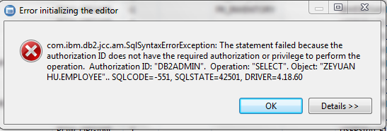
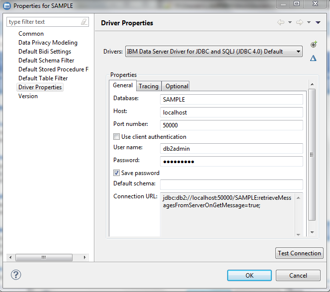

Problem (Abstract)¶
SQL0551N authorization ID does not have the required authorization or privilege when Windows DB2 Server running under Domain account while member of local DB2ADMINS group
Symptom¶
SQL0551N The statement failed because the authorization ID does not have the required authorization or privilege to perform the operation. Authorization ID: “”. Operation: “”. Object: “”. SQLSTATE=42501
Cause¶
The symptom happened that SAMPLE is created using Windows Domain ID (i.e. ZEYUAN HU), which can tell from the default schema. But when connecting with SAMPLE through Data Studio, you are using user ID: db2admin, which is shown below:
Detailed Explanation¶
DB2 doesn’t use created user ids like other databases do. It looks to the underlying operating system or LDAP for authentication. In the Unix/Linux environment, the instance Id that is the highest ID administratively is what ID the instance is set up to run as. Your db2admin account is this account. That being said....Windows introduces a different security scheme. Even though the instance ID exists, whoever installed the product (their user ID) tends to be granted high administrative powers in DB2. And when you issue the CREATE DATABASE statement, you are doing it with your Windows user ID. Therefore, it becomes the owner of the database and has DBADM, SECADM, DATAACCESS, and ACCESSCTRL granted to it. db2admin will generally have DBADM WITHOUT DATAACCESS WITHOUT ACCESSCTRL. So you would need to log in as Nenad (the ID with SECADM) and grant (to be safe) DBADM, SECADM, DATAACCESS, ACCESSCTRL to user db2admin. Now that ID should have what you are looking for.
I don’t recommend those privileges for just any ID. If all you need is access to read/write to tables then DATAACCESS alone should do it.
Resolving the problem¶
There are two ways to fix the problem:
- connecting with SAMPLE through Data Studio using Windows Domain ID (i.e ZEYUAN HU)
As Windows Domain ID (i.e. ZEYUAN HU), grant the appropriate permissions to user ID: db2admin
This can be done as following:
db2 connect to sample user 'ZEYUAN HU' using 'password'or
db2 connect to sampleNote
both case will use Windows Domain ID to connect with SAMPLE
db2 grant DATAACCESS on DATABASE to user db2admin